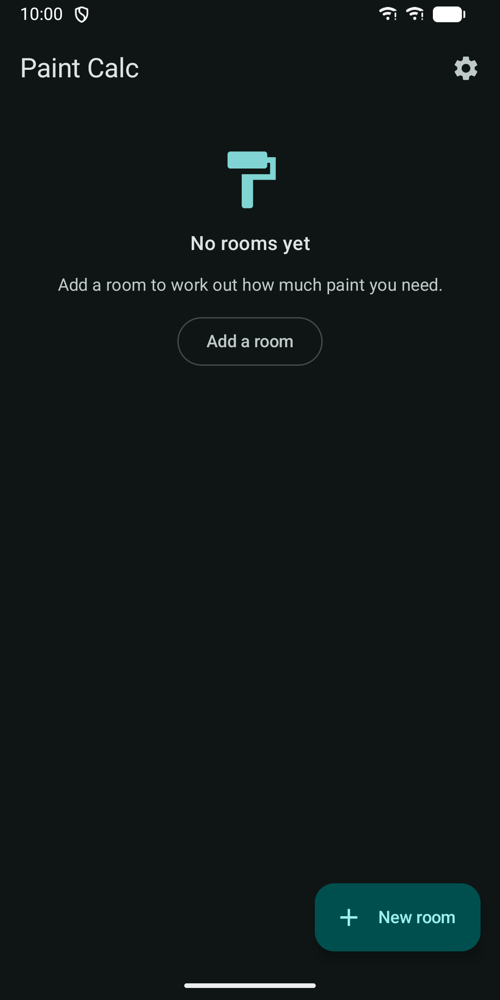

Paint Calc: Farbbedarf Raum
Farbbedarf für Räume: Anstriche, Türen, Fenster und Verschnitt




Über die App
Paint Calc berechnet, wie viel Farbe ein Raum braucht, und rundet das Ergebnis auf Gebinde auf, die es wirklich zu kaufen gibt. Die App läuft komplett auf deinem Gerät, ohne Konto und ohne Anmeldung. So kannst du sie auf der Baustelle, im Baumarkt oder im Keller ohne Empfang nutzen. SCHNELL ODER WAND FÜR WAND - Schnellmodus: Länge, Breite und Höhe eingeben, die Wandfläche wird automatisch berechnet. - Wandmodus: Wände einzeln hinzufügen, für schiefe Räume, Treppenhäuser und Dachzimmer. - Türen und Fenster mit einem Tipp abziehen, mit Standardmaßen oder eigenen Maßen. JEDE FLÄCHE NACH DEINEN WÜNSCHEN - Wände, Decke, Leisten und Grundierung, jeweils mit eigenem Schalter, Anstrichen (1 bis 4) und Ergiebigkeit. - Trage die Ergiebigkeit vom Eimer ein, in sq ft pro Gallone oder m2 pro Liter. - Glatte, leichte oder grobe Struktur erhöht den Bedarf um 0, 10 oder 20 Prozent. - Verschnitt-Regler von 0 bis 25 Prozent. ANTWORTEN IN GEBINDEN, NICHT IN KOMMASTELLEN - Imperial: Gallonen und Quarts. Wenn drei Quarts mehr kosten würden als eine Gallone, bekommst du die Gallone. - Metrisch: Gebinde mit 5 l, 2,5 l, 1 l und 0,5 l. - Gesamtmenge und Aufschlüsselung für jede Fläche. SPEICHERN UND TEILEN - Speichere beliebig viele Räume. - Teile ein Raumergebnis als Text mit jeder App. - Ein Widget auf dem Startbildschirm zeigt die Farbmenge für den zuletzt geöffneten Raum oder das letzte Projekt. PRO (EIN IN-APP-KAUF) Die obigen Funktionen sind in der Basis-App enthalten. Diese Funktionen brauchen den Pro-Kauf über Google Play: - Projekte: Räume gruppieren und Summen je Fläche und je Farbe erhalten. Farbe wird nach Produkt zusammengefasst, so kaufst du womöglich weniger Gebinde als Raum für Raum. - Kostenschätzung: Speichere deine Farbpreise je Gebindegröße und sieh die Kosten jedes Projekts in deiner Währung. - PDF-Angebote: Firmenname, Kunde, Räume, Farbmengen, Farbkosten und eine optionale Arbeitszeile. Das PDF teilst du direkt vom Handy. - Ganze Projekte als Text teilen. FÜR HANDY UND TABLET - Zwei-Spalten-Ansicht auf Tablets und Falt-Geräten. - Helles und dunkles Design folgen deiner Systemeinstellung. - Beschriftungen für Screenreader und große Tippflächen. DEINE DATEN BLEIBEN AUF DEINEM GERÄT Paint Calc fordert keine Internetberechtigung an. Räume, Projekte und Kundennamen werden nur auf diesem Gerät gespeichert und vom Cloud-Backup ausgeschlossen. Die einzige Verbindung ist Google Play für den optionalen Pro-Kauf. Die Ergebnisse sind Schätzwerte. Prüfe immer die Ergiebigkeit auf deinem Farbeimer.